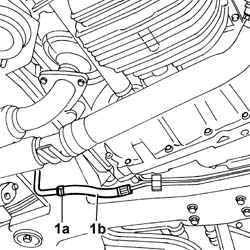
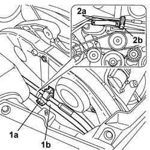

4130B38 Rubber supply PIPE from RIGID PIPE to POWER ASSISTED STEERING PUMP - R.R. Includes bleeding air
- Path
- Procedures > 41 STEERING > 4130 POWER ASSISTED STEERING > 4130B POWER STEERING HYDRAULIC SYSTEM > 4130B38 Rubber supply PIPE from RIGID PIPE to POWER ASSISTED STEERING PUMP - R.R. Includes bleeding air
- Kind
- repair procedure (removal / refitting; the operation number is the code)
- Applies to
- engines: 3.0 V6, 3.2 V6; all production periods
- Interactive page
- https://sloeber94.github.io/elrnDB-lThss/en/#/174244
Applies to: engines: 3.0 V6, 3.2 V6; all production periods
 Removing
Removing
 Refitting
Refitting- Position the vehicle on a lift.
- Make sure that the ignition key is in the OFF position, then disconnect the negative battery lead.
See in Op. 5550A12 complete stalk unit - r+r for versions with air bag
See in Op. 1088B10 Engine coolant SUPPLY RESERVOIR - R.R.
See in Op. 1088C10 WATER PUMP - R.R.
- Raise the vehicle on the lift.
- Position a suitable container for collecting the power assisted steering fluid.
1. Open the retaining band (1a) and disconnect the flexible return pipe (1b) to the power assisted steering fluid reservoir from the duplex pipes, then leave the system to drain.

Applies to: engines: 3.0 V6, 3.2 V6; all production periods
- Lower the vehicle
1. Open the band (1a) retaining the power assisted steering pipes (1b) on the timing covers
2. Open the bands (2a) and remove the rubber pipe (2b).

Applies to: engines: 3.0 V6, 3.2 V6; all production periods
Refitting
Removing- Position the rubber pipe and close the retaining bands.
- Position the pipes on the timing covers and close the retaining band.
- Raise the vehicle on the lift.
- Connect the flexible return pipe to the power assisted sterring fluid reservoir from the duplex pipes and close the retaining band.
See in Op. 1008C10 Power unit REACTION ROD - Replace
See in Op. 1088B10 Engine coolant SUPPLY RESERVOIR - R.R.
See in Op. 5550A12 complete stalk unit - r+r for versions with air bag
- [0010T21]
- [0010T70]
- Connect the negative battery terminal and position the cover on the left hand side of the luggage compartment.
- Remove the vehicle from the lift.